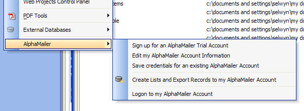
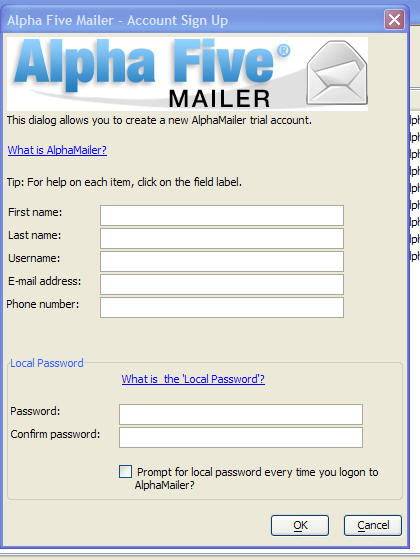
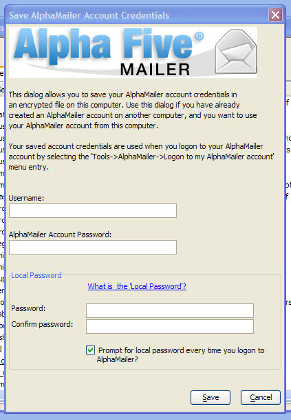
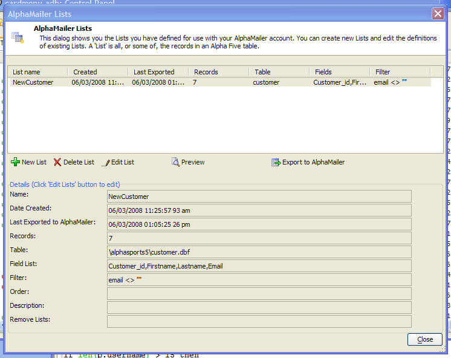
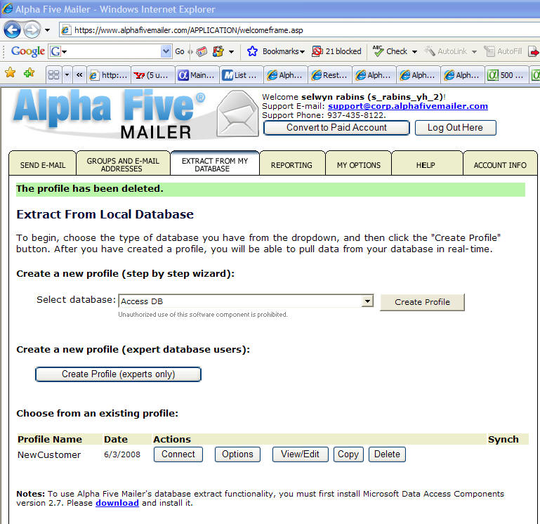
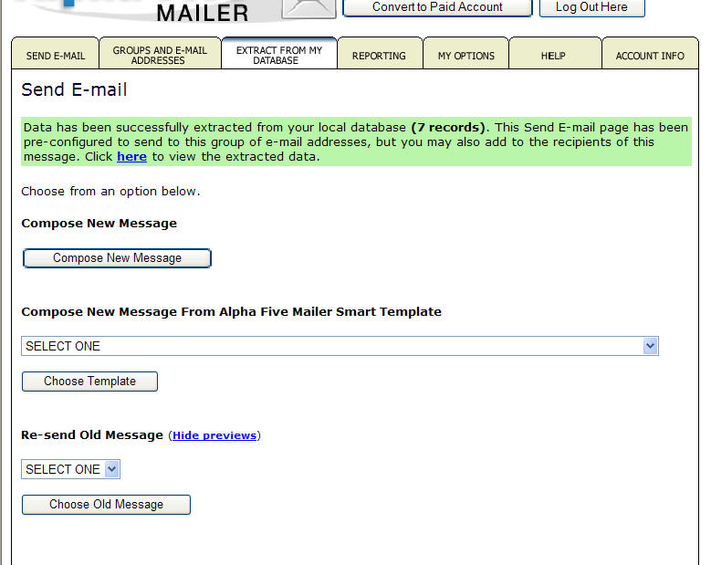
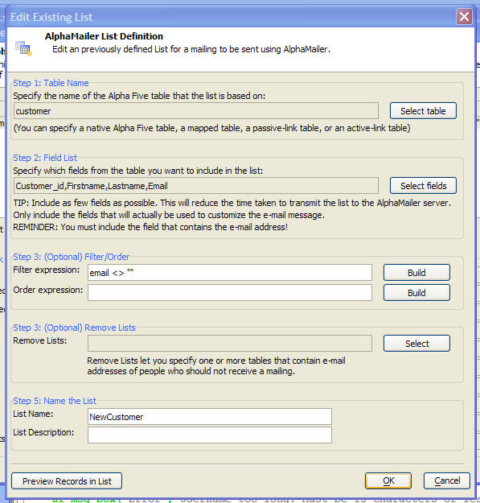
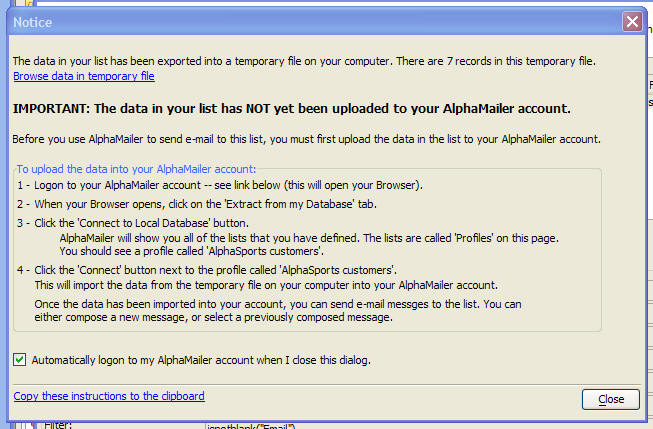

AlphaMailer - An on-line E-mailing Service
AlphaMailer is an on-line service for delivering customized mailings to an e-mail list. Mailings can be sent in a rich, HTML format.
Using an on-line service that is dedicated to the reliable distribution of targeted e-mail has numerous advantages compared with mailing yourself, using your own e-mail account.
- When you mail in bulk using your own e-mail account, there is a good chance that your ISP will consider the mailing to be SPAM and will block the mailing.
- When you mail using your own e-mail account, you do not get any statistics, such how many people opened the mailing.
- When you mail using you own e-mail account, you do not get automatic handling of remove requests and bounces.
Alpha Five comes with a free trial account for AlphaMailer. The trial account lets you test out the various features of AlphaMailer. You can send out up to 50 e-mails using your trial account.
AlphaMailer is an on-line service. You use your browser to log onto your AlphaMailer account, and you manage all aspects of composing and initiating a mailing using your browser.
Of course, the address list that you are likely to want to use is stored in one or more of your AlphaFive databases.
The AlphaMailer interface that is built into Alpha Five allows you to define one or more 'lists' and to then export those lists to your AlphaMailer account to drive a mailing.
When you define a 'list' you specify these properties:
- Name of the Alpha Five table (it can be a standard table, mapped table, passive-link table, or active-link table)
- The fields from the table that you want to use to customize your mailing
- The filter and order expression to select which records in the table you want to include in the list.
- The 'remove lists' - one or more tables that contain e-mail addresses of people who have indicated that they do not want to receive mailings from you.
Note that the remove lists that you define in Alpha Five are applied before your list is uploaded to your AlphaMailer account. Your AlphaMailer account also applies a remove list that is maintained on the server and is built up from people who have requested to be removed from your list in the past.
IMPORTANT: AlphaMailer is only compatible with Internet Explorer. You cannot use AlphaMailer's ability to upload your mailing list
Accessing AlphaMailer
AlphaMailer is accessed from the Tools menu when the Control Panel has focus.

Sign Up for AlphaMailer Account
To get started, select the 'Sign up for an AlphaMailer Trial Account' menu entry.
You can choose the Username for your AlphaMailer account, but not the password - you will be assigned a password when you sign up.
Your AlphaMailer username and password are stored on your computer in encrypted form. This will allow you to log onto your account more easily. To protect your stored AlphaMailer credentials however, you can define a 'local' password.
If your copy of AlphaFive on your computer is used by other users as well as yourself, you might want to check the 'Prompt for local password every time you logon to AlphaMailer' checkbox. (You can always change this setting later on, if you wish - select 'Edit my AlphaMailer Account Information').

Configuring your Computer to use an Existing AlphaMailer Account
If you have an existing AlphaMailer account (created on another machine), then you can configure your computer to use this account. You will need to enter your AlphaMailer username and password and also specify your 'local' password. Your AlphaMailer account credentials will be stored on this machine in encrypted form, protected by the 'local' password.
To access the dialog shown below, select Tools, AlphaMailer, Save Credentials for an Existing AlphaMailer account.

AlphaMailer Lists
An AlphaMailer 'list' is a definition of how to extract records from a table so that the result can be uploaded to your AlphaMailer account.
To get to the AlphaMailer Lists dialog, select 'Create Lists and Export Records to my AlphaMailer Account' from the menu. The AlphaMailer Lists dialog shows you all of the List definitions that you have created in Alpha Five.
When you create a new List here (by clicking the New List button), Alpha Five will prompt you for details about the new list (see 'Creating a New AlphaMailer List' below) and it will then automatically create a new 'profile' in your AlphaMailer account. The profile will have the same name as the List. The screenshot below shows the list of profiles in an AlphaMailer account. Note that the profile name shown ('NewCustomer') matches the list name shown in the 'AlphaMailer Lists' dialog. There should be one profile in your AlphaMailer account for each List that you define in the AlphaMailer Lists dialog.
The 'profile' in your AlphaMailer account contains details of how to extract the data from your Alpha Five tables and import it into your AlphaMailer account so that the data can be used in a mailing.

After you have define an AlphaMailer list, here is how the list of existing profiles looks in your AlphaMailer account. Notice that the profile name shown here is the same as the List name in Alpha Five (i.e. 'NewCustomer').

Each profile that appears in the list has a 'Connect' button associated with it.
Whenever you want to do a new mailing you will first click the 'Connect' button for the appropriate profile. This button will then import the records from your computer into your AlphaMailer account. After the data has been successfully imported into your AlphaMailer account, you will see this screen, where you can start composing your message.

Technical Note: When you press the 'Connect' button, AlphaMailer imports data from your computer into your account. However, AlphaMailer can not read AlphaFive files directly. It reads a temporary file that is created on your computer when you create a new List (the 'New List' button on the AlphaMailer Lists dialog), or when you click the 'Export to AlphaMailer' button (also on the AlphaMailer Lists dialog).
To initiate a mailing to a List that you previously created, you would follow these steps:
- Open the AlphaMailer Lists dialog.
- Click the 'Export to AlphaMailer' button. This will create a new temporary file with an up-to-date list of records.
- Logon to your AlphaMailer account.
- Press the 'Connect' button for the appropriate profile.
Creating a New AlphaMailer List
To create a new List, click the 'New List' button the the AlphaMailer Lists dialog. The following screen will appear where you can define:
- Name of the Alpha Five table that contains your data. You can choose any type of Alpha Five table - native, mapped, passive-link or active-link).
- The fields in the table that you want to include in your list. In addition to the email address field, you should only select the fields that will actually be used to customize your email message. The reason for this is that it will minimize the amount of data that has to be transferred when you upload your data to your AlphaMailer account.
- An optional filter expression to select which records are included in the list.
- An optional order expression to specify the order in which records appear in the list.
- An optional list of tables that contain remove requests. (See Processing Local Remove Requests below for more information).
- The List name and description.
You can press the 'Preview Records in List' button to see a list of the records in the List.

When you press the OK button, Alpha Five will:
- Save the definition of the List on your computer (the List will appear in the AlphaMailer Lists dialog box).
- Create a new profile in your AlphaMailer account. (The profile will have the same name as the list name).
- Export the data from your Alpha Five table to a temporary table that is in a format that AlphaMailer can read.
Then, it will display this dialog instructing you to log onto your AlphaMailer account and press the 'Connect' button to upload your data:
Note: Before you can import data into your AlphaMailer account for the first time, you will need to download and install an ActiveX control. When you click the 'Connect to Local Database' button, you will see details about the download.

Processing Local Remove Requests
Before you export your data to AlphaMailer, you can automatically remove any e-mail address that appear in one or more 'Remove Lists'. When you create a new List definition, you can specify one or more tables that contain e-mail addresses that should not be mailed.
Summary of Steps to Create a New Mailing in AlphaMailer
Below is a summary of the steps you must follow to do a new mailing using your AlphaMailer account.
- Open the AlphaMailer Lists dialog by selecting Tools, AlphaMailer, Create Lists and Export Records to my AlphaMailer Account
- If you want to mail to a List that you previously set up, click the 'Export to AlphaMailer' button. This will export the data in your List to a temporary file on your computer that AlphaMailer can read. Any e-mail addresses in your 'Remove Lists' will be automatically removed from this temporary list.
- If you want to mail to a new List, first create the List definition by clicking the 'New List' button on the AlphaMailer Lists dialog box.
- Logon to your AlphaMailer account.
- Click the 'Extract From My Database' tab.
- Click the 'Connect' button for the appropriate profile.
After the data has been successfully imported into AlphaMailer, you can compose and send your mailing.